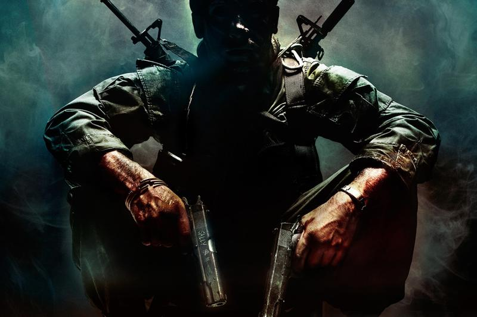
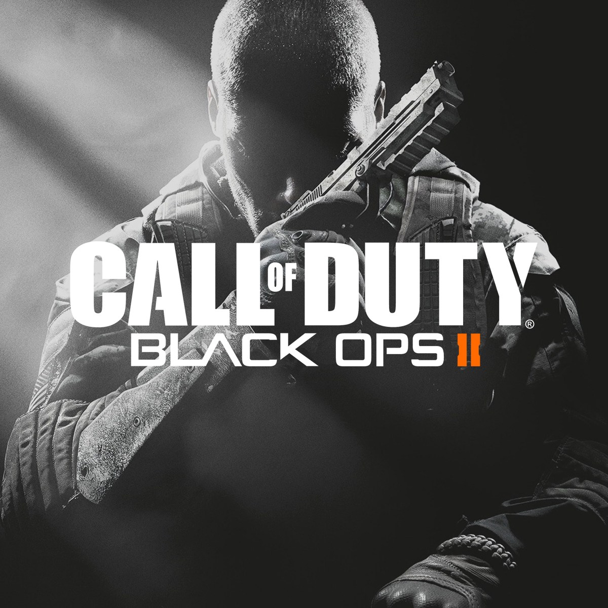

Black Ops 1 & 2
Of course, the first two installments of the series are going in the stash. Black Ops One was imacculate despite its bugs and small messups. The game released in late 2010 but still holds up as one of my personal favorite COD games of all time. It looks like garbage by today's standards, but I still get on and play with all 5 people on the servers here and there.
As for Black Ops Two, this was the absolute best first person shooter (other than literally any Halo game ever made) that I had played in my life when I was a teenager. Every weapon, awesome. Every perk, awesome. Anything about this game at all, awesome. This was alos the first game I got to play with my dad that wasn't on the NES, and I absolutely destroy him in every time.
 